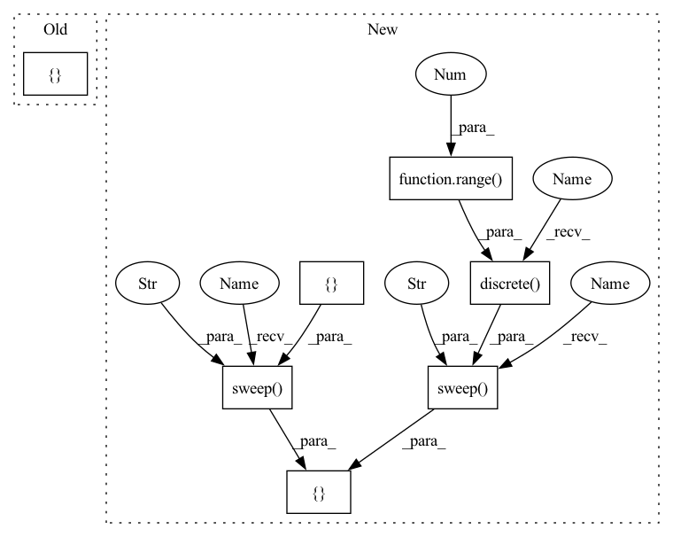

Pattern ID :7172

Before Change
def get_sweep(hyper):
num_trials = 5
return hyper.zipit([
hyper.loguniform("base_learning_rate", hyper.interval(1e-3, 0.1)),
hyper.loguniform("one_minus_momentum", hyper.interval(1e-2, 0.1)),
hyper.loguniform("l2", hyper.interval(1e-5, 1e-3)),
], length=num_trials)
// return hyper.product([
// // hyper.sweep("dempster_shafer_ood", hyper.categorical([False, True])),
After Change
def get_sweep(hyper):
return hyper.product([
hyper.sweep("dempster_shafer_ood", hyper.categorical([False, True])),
hyper.sweep("seed", hyper.discrete(random.sample(range(1, int(1e10)),
5))),
])
In pattern: SUPERPATTERN
Frequency: 3
Non-data size: 7
Instances
Fragment ID: 24075983
Project Name: google/uncertainty-baselines
Commit Name: a9a35b30c18a9ddc418ff10e91347a6f652e528a
Time: 2021-10-11
Author: jjren@google.com
File Name: baselines/cifar/experiments/deterministic_tune.py
M Class Name: AnonimousClass
N Class Name: AnonimousClass
M Method Name: get_sweep(1)
N Method Name: get_sweep(1)
M Parent Class:
N Parent Class:
M File Name: baselines/cifar/experiments/deterministic_tune.py
N File Name: baselines/cifar/experiments/deterministic_tune.py
M Start Line: 55
M End Line: 60
N Start Line: 60
N End Line: 64
'>
Before Change
def get_sweep(hyper):
Returns hyperparameter sweep.
domain = [
// hyper.sweep("config.psl_constraint_learning_weight",
// hyper.discrete([0., 0.001, 0.005, 0.01, 0.05, 0.1])),
// hyper.sweep("config.model.vae_cell.encoder_hidden_size",
// hyper.discrete([200, 300, 400])),
hyper.sweep("config.base_learning_rate", hyper.discrete([5e-4, 1e-3]))
]
sweep = hyper.product(domain)
return sweep
After Change
def get_sweep(hyper):
Returns hyperparameter sweep.
domain = [
hyper.sweep("config.word_weights_file_weight",
hyper.discrete([0.25 * i for i in range(5)])),
hyper.sweep("config.psl_constraint_learning_weight",
hyper.discrete([0., 0.001, 0.005, 0.01, 0.05, 0.1])),
hyper.sweep("config.model.vae_cell.encoder_hidden_size",
hyper.discrete([200, 300, 400])),
hyper.sweep("config.base_learning_rate", hyper.discrete([5e-4, 1e-3]))
]
sweep = hyper.product(domain)
return sweep
'>
Fragment ID: 24075981
Project Name: google/uncertainty-baselines
Commit Name: df24c503f1ef1a48a64cdf8e399fb748f35adddf
Time: 2022-02-23
Author: yquan@google.com
File Name: experimental/language_structure/vrnn/experiments/linear_vrnn/multiwoz_synth.py
M Class Name: AnonimousClass
N Class Name: AnonimousClass
M Method Name: get_sweep(1)
N Method Name: get_sweep(1)
M Parent Class:
N Parent Class:
M File Name: experimental/language_structure/vrnn/experiments/linear_vrnn/multiwoz_synth.py
N File Name: experimental/language_structure/vrnn/experiments/linear_vrnn/multiwoz_synth.py
M Start Line: 48
M End Line: 54
N Start Line: 36
N End Line: 44
'>
Before Change
// hyper.loguniform("one_minus_momentum", hyper.interval(1e-2, 0.1)),
// hyper.loguniform("l2", hyper.interval(1e-5, 1e-3)),
// ], length=num_trials)
return hyper.product([
// hyper.sweep("dempster_shafer_ood", hyper.categorical([False, True])),
])
After Change
def get_sweep(hyper):
return hyper.product([
hyper.sweep("use_spec_norm", hyper.categorical([False, True])),
hyper.sweep("use_gp_layer", hyper.categorical([False, True])),
hyper.sweep("dempster_shafer_ood", hyper.categorical([False, True])),
hyper.sweep("seed", hyper.discrete(random.sample(range(1, int(1e10)),
5))),
])
'>
Fragment ID: 24075971
Project Name: google/uncertainty-baselines
Commit Name: a9a35b30c18a9ddc418ff10e91347a6f652e528a
Time: 2021-10-11
Author: jjren@google.com
File Name: baselines/cifar/experiments/sngp_tune.py
M Class Name: AnonimousClass
N Class Name: AnonimousClass
M Method Name: get_sweep(1)
N Method Name: get_sweep(1)
M Parent Class:
N Parent Class:
M File Name: baselines/cifar/experiments/sngp_tune.py
N File Name: baselines/cifar/experiments/sngp_tune.py
M Start Line: 62
M End Line: 64
N Start Line: 58
N End Line: 64